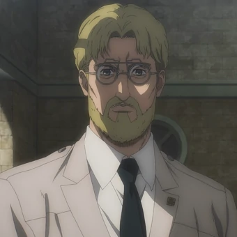

The man who saved a billion lives
Este es el Titan Bestia
Zeke aparece por primera vez en el pueblo de Ragako cuando los titanes aparecen misteriosamente en la Muralla Rose, aunque el muro se mantiene intacto. El titán muestra una notable inteligencia en su encuentro con Mike Zacharius, al cual le lanza su caballo, y como consecuencia, Mike cae hacia un titán. Zeke le ordena al titán que no se lo comiera, para poder interrogarlo sobre el equipo de maniobras tridimensional. Acto seguido, Mike, estando sorprendido, ve como el Titán Bestia aplasta al titán que lo retenía. Mike, sin decir una sola palabra, escucha al Titán Bestia preguntarle sobre el Equipo de Maniobras Tridimensional y cuestionar su idioma. Mike, al ver que la mano del Titán Bestia se acercaba a él, comienza a temblar en una posición fetal, luego de eso, Zeke, ya con parte del Equipo de Maniobras Tridimensional, procede a retirarse, es en ese momento cuando Mike recuerda las palabras motivadoras que le dijo a Nanaba y decide levantarse, pero, en ese momento, el Titán Bestia les permite a los titanes devorarlo.